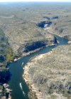
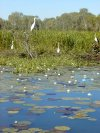
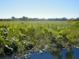
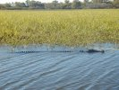
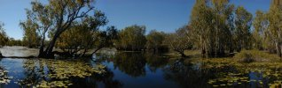
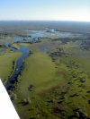

|
A military exercise, in which Australia, Great Britain, the USA, and Singapore were involved, had just commenced and was to be on for the next two weeks. Immediately after we arrived at the airport 16 F18's took of - two at a time - making an incredible noise. A local pilot told me that it probably would be a wise thing to get out of Tindal before 2pm, as a simulated attack was planned for the base in the afternoon (would have been interesting to try and get out while the airbase was under attack by all these fighter planes though :-). By the time we got airborne some of the F18's were on their way back to land so we had pretty much Hornets in front, behind, besides, below and above us. The air traffic controller got really busy and didn't have time to deal with us - we just got a quick clearance for Katherine Gorge and Edith Falls.

The GPS was a bit "grumpy" and decided not to operate for quite a long time so we had to navigate visually - but there is not much to navigate by. We made it to Katherine Gorge though and managed to stay out of the way of the many helicopters that fly around the gorge.
Edit Falls wasn't all that spectacular - at least not from our point of view, so we continued quickly to Kakadu National Park. Kakadu is HUGE. To do it properly by car takes many days. It is different of course and might not be a very fair comparison, but by air you can do most of the Kakadu must-sees in a few hours.
Twin and Jim Jim Falls were some of the more prominent features we circled. Yellow Waters was supposed to be just overflown on the way to Darwin, but it looked really nice and the Cooinda air strip was located just next to it as we could see, so we decided shorthand to
land there and buy lunch.

Now that we had landed, we thought we could as well do one of the boat cruises. Linda found out about a 1½ hour tour leaving at 2.45pm. To make sure we still could get to Darwin after the cruise, we checked for last light and also amended the SAR (Search And Rescue) time.
This is exactly how it should be. The airstrip adjacent to the attraction - no taxi, no bus, nothing like that necessary - just walk in and walk out.


The cruise was very good. We saw lots of wildlife. The highlights were a few "salties" that didn't seem to mind us getting really close.

It was 5pm,
which meant two hours of light, when we came back to the plane. No problem, but the fuel was getting a bit low. We had just enough to make it to Darwin plus the mandatory 
reserve of 45 minutes of course. So a direct flight without any kind of detours was a must. I was hoping that Darwin wouldn't put us on hold outside controlled airspace for too long. Of course the GPS went on a bit of a strike again, so we had to navigate by traditional means again - exciting when you're trying to fly the shortest possible path to Darwin :-). Well, we made it and even had about 35 liters left in the tanks (30 liters is a mandatory fixed reserve an you're not supposed to use that unless in an emergency).
Edlef, my dad, who is going to join us for the next couple of weeks, had landed about six hours earlier (flying in from Denmark) and was now awaiting us in the GA (General Aviation) parking area. He had spent the afternoon doing CASA paperwork to get his license acknowledged in Australia, organising for a flight instructor to type-check him on Grummy, finding a lift into town, and getting more and more excited ;-).
Good to see him again - it has been a while.
Dietmar, an Austrian pilot whom Edlef had met, drove us to our hotel and joined us later for dinner.


|
|
|
{kind=link}
{kind=link}
{kind=link}
{kind=link}
{kind=link}
{kind=link}